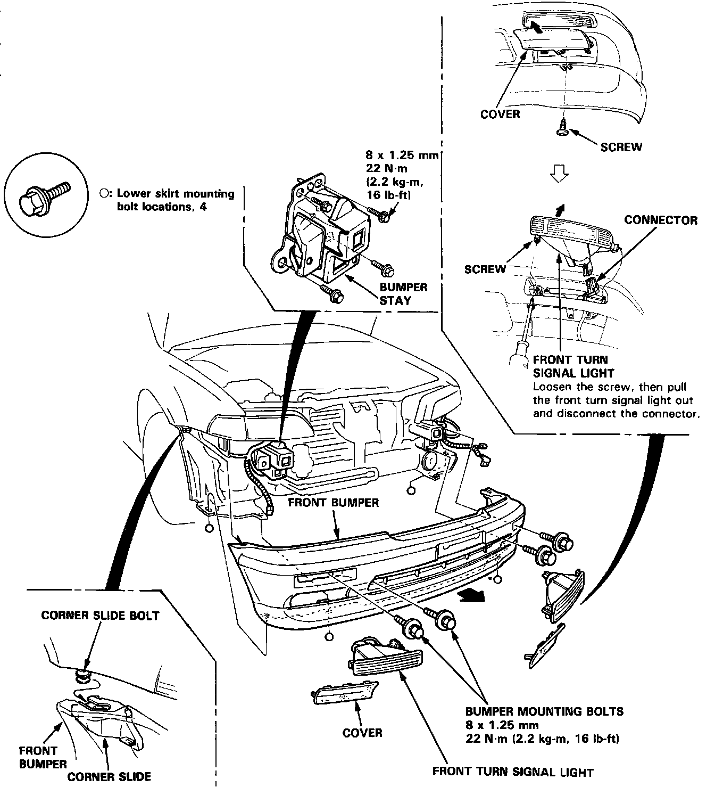

Front Bumper Cover / Fascia: Service and Repair
NOTICE: The procedures and images are for the Legend sedan models. Coupe models are similar.Front Bumper Replacement
CAUTION: Wear gloves to remove and install the front bumper.

1. Remove the covers, then remove the right and left front turn signal lights.
2. Remove the two bumper mounting bolts on each side.
3 Remove the four lower skirt mounting bolts.
Coupe only: Remove the 2 lower skirt clips.
4. Lift and remove the bumper by sliding it forward.
NOTE:
^ An assistant is helpful when removing the bumper.
^ Take care not to scratch the bumper.
5. Installation is the reverse of the removal procedure.
NOTE: To install, insert the corner slide bolts into the corner slides.